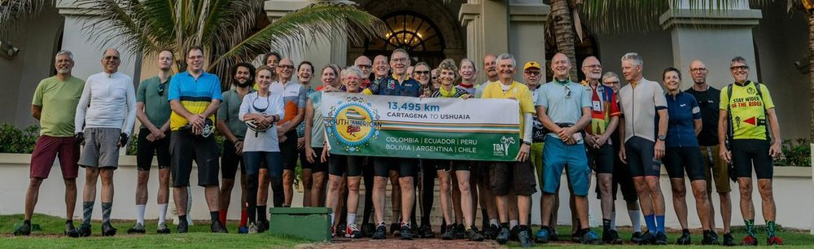
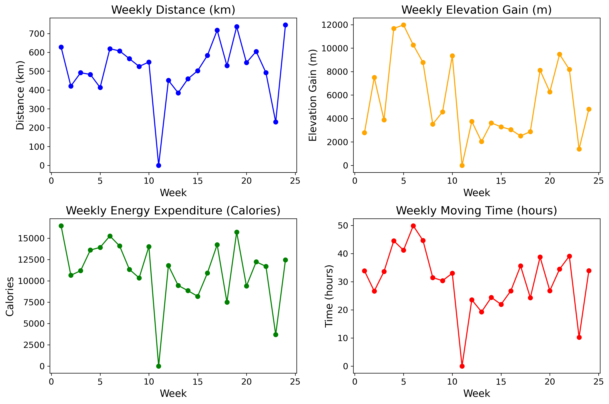
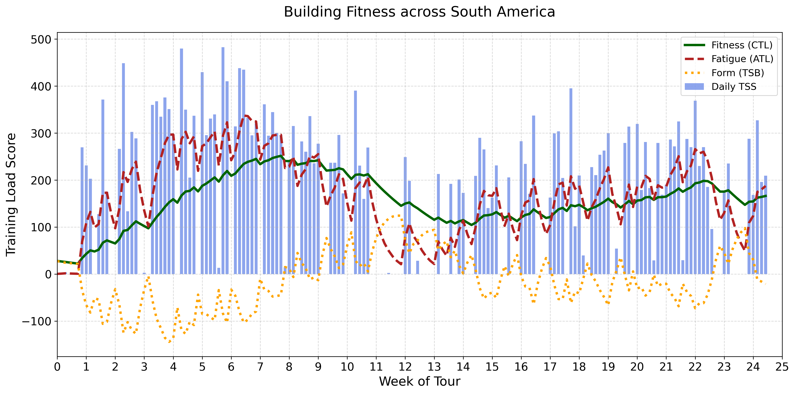
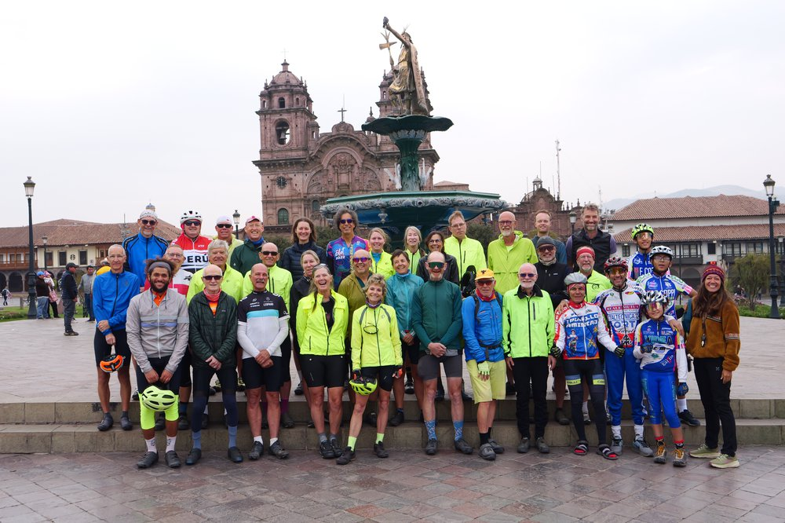
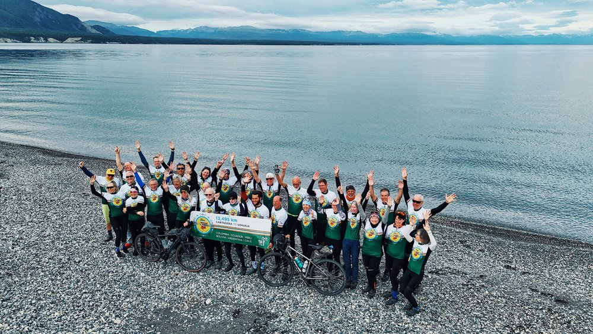

Introduction#
The 2024 South American Epic started on the last day of June in Cartagena, Colombia and finished 24 weeks later in Ushuaia, Argentina.
Route Overview#
As Planned
As Ridden
On the left, the orange line is a sketch of the route as planned.
On the right each of my rides (some were shortened, some were skipped) are depicted with a different color for each day of riding. On the continental scale it looks like lots of colored dots (118 rides) you can expand the scale to have a look but there will be finer scale maps for each block of rides in the country pages below.
Of course not everything went to plan. I didn’t do every ride from start to finish. We all missed a few days of riding in Bolivia due to protests, and in Patagonia due to logistical issues. Still it was a big trip.
TDA Global Cycling organizes trips like this around the world. Everyone brings a bike and 2 duffels to live out of for the duration of the trip. A great group of staff help us to navigate across the continent, fix our bikes, haul our gear, keep us healthy and out of trouble. The tour is broken into 9 sections, beginning and ending at cities with airports where people can join or leave the tour. About 30 of us met in Cartagena, 17 went all the way to Ushuaia , other “sectional” riders joined us along the way, often for months at a time.
{kind=link}

Fig. 1 All smiles before the start in Cartagena#
Weather for the tour was surprisingly uniform. After a few hot and humid mid-summer days in the lowlands of Colombia, we started to climb into the Andes. We crossed the equator in Ecuador on August 1. For the first 100 days, until we reached the tropic of capricorn, temperatures had more to do with elevation than season or latitude. The only night I remember frost on the tent was at the base of Cotopaxi in early August. From Argentina southward we were riding from a wonderfully extended early spring into summer. It seemed for several weeks as we rode south in Chile and Argentina that we were seeing the growing season run in reverse. Just a few rainy days as we were mostly on the dry side of the Andes almost always within a few hundred kilometers of the Pacific Ocean.
The rhythm of the tour was centered around blocks of rides, 2 - 7 days where we would ride every day, live out of a single duffle and sleep in a tent most nights. Riding blocks were punctuated by rest days in a hotel, where we could recuperate and the staff could catch their breath. Explore. Do laundry. Repack and get ready to ride again.
This introduction presents an overview of the route, as planned by TDA and as ridden (by me, everyone did their own ride, there were both individual and global changes to the original plan - nobody made it to 13,495 km as indicated on the banner above, primarily because of an extended break in Bolivia to avoid a political demonstration - but more about that later).
Expedition Metrics#
An overview of the metrics of my tour: kilometers traveled, meters climbed, hours ridden, energy expended, is presented in tables and figures below. Overall we rode about 5 or 6 hrs per day 5 or 6 days per week for 24 weeks.
Total |
Per Week |
Per Ride (118) |
|
|---|---|---|---|
Distance (km) |
12,285 |
512 |
104 |
Elevation Gain (m) |
133,651 |
5,569 |
1,132 |
Energy Expended (kcal) |
267,015 |
11,126 |
2,263 |
Moving Time (hrs) |
728 |
30.3 |
6.2 |
Distances, elevation gain, and moving time were recorded on a Garmin device for each ride, downloaded via the Strava API and calculated as outlined in strava_summary.ipynb in the appendix_. Energy Expended came from Garmin - it’s an estimate of Calories burned. Lots of climbing in the first few weeks in Colombia and Ecuador. Flattish as we rode along the coast of Peru. More climbing back into the Andes, a few days interruption waiting for protests to clear in Bolivia.
Metrics by Week#

Fig. 2 Weekly riding statistics. My weekly riding distances, elevation gains, Ramping up quickly to long days and big climbs in Colombia and Ecuador. Gradually the fitness accumulates#
Fitness metrics#
Data collected from my Garmin devices (bike computer or watch, mostly with a HRM chest strap) was collected during rides and activities (rest day hikes, a few hotel-gym strength sessions), uploaded automatically to Garmin and shared with Strava and TrainingPeaks. The fitness data below is straight from TrainingPeaks as they calculate hrTSS automatically.

Fig. 3 Training Stress Scores, Loads and Balance. Blue lines indicate daily Training Stress Scores (TSS). TSS = 100 is roughly maximum sustainable effort over an hour’s time, so TSS of 300 to 500 are roughly equivalent to a 3 to 5 hr all out effort. CTL in green represents chronic training load, fitness accumulated over the last 7 weeks. The red dashed line represents Acute Training load, weighted average efforts over the last 7 days. TSB in the yellow dots, indicates the difference between CTL (what you’re prepared for) and ATL (recent efforts). Best not to let TSB get to deep in the hole, dipping below 100 for the first few weeks wasn’t great. but gradually my daily efforts and long term fitness came into better alignment. Still there were hard days sprinkled throughout.#
I loved this trip. It was often very hard. I really loved the rivers we followed and the work they did in wearing down the mountains so that roads could be built and we could make it from the top to the bottom of South America on our bikes. Links below to each of the countries that we traveled through. 6 countries plus a 7th section for Patagonia (several border crossings over the last few weeks).
Colombia#
We started in Cartagena on the coast on the last day of June, in hot and humid conditions.
The first block of riding took us to San Marcos, in the La Mojana wetlands. Rivers were running high, and we needed to charter some boats from local folks to bypass our first unpaved (muddy) road. From there the road headed up into the Cordillera to Medellin, Bogota, and San Augustin.
Ecuador#
The Andean spine continues south along the famed Avenue of the Volcanoes.
Bridges over highland rivers like the Guayllabamba or Chambo mark daily minima.
Numerous passes above 3,000–4,000m separate distinct drainage basins, each flowing west to the Pacific or east toward the Amazon.
Peru#
Northern Peru begins with Andean foothills and sees crossing of rivers that eventually merge into the Marañón, a principal tributary of the Amazon.
Deeper into the highlands, the route intersects the Apurímac and Urubamba watersheds, known for steep canyon descents and big climbs.
Passes above 4,000m open onto altiplano expanses, with sweeping views of mountain ridges eroded by countless millennia of water flow.
{kind=link}

Fig. 4 Meeting with local cyclists on the Plaza Major in Cusco#
Bolivia#
Entering Bolivia often involves a descent to Lake Titicaca or surrounding valleys, then re-ascending onto the Altiplano.
While fewer large rivers cut the high plateau, notable valley systems like the Río Desaguadero occasionally punctuate the broad plains.
The route navigates remote stretches with stark, open vistas, minimal vegetation, and wide salt flats like the Salar de Uyuni.
Argentina#
The journey southward can begin near the Andean side of Northwest Argentina, crossing wide valleys (e.g., the Calchaquí Valleys) with cacti-dotted slopes.
Rivers here are often seasonal torrents, carving dramatic canyons.
Approaching the central regions may involve bridging the Río Dulce, Río Salado, or feeders into the Pampas basins.
Chile (Northern & Central)#
The first stretch in Chile typically includes Atacama Desert regions, where rivers are scarce but dramatic oases (like the Río Loa watershed) highlight precious water sources.
Farther south, crossing the Central Valley region involves bridging rivers like the Río Aconcagua, which are lifelines for Chile’s fertile agricultural zones.
The Andean passes to Argentina (and back) can exceed 3,000–4,000m, with precipitous descents following the major Andean drainage corridors.
Patagonia (El Chaltén to Ushuaia)#
After central Chile and/or crossing the Andes into El Chaltén (Argentina), the route enters Patagonia: a land of rugged peaks, glaciers, and windswept steppes.
Iconic rivers like the Río Santa Cruz, Río Gallegos, and countless meltwater streams from the Southern Patagonian Ice Field shape this wild region.
The ride alternates between near-sea-level crossings and passes battered by cold, gusty winds.
Reaching Ushuaia often involves one final set of climbs across the Fuegian Andes, culminating in a last descent into the world’s southernmost city.
{kind=link}

Fig. 5 Ready to start the last ride from Lago Fagnano, Argentina#
Closing Thoughts#
From Colombia’s Caribbean plains to the windswept fjords of Patagonia, rivers and their valleys form the arteries and lifelines of the continent. The consistent pattern of bridges at daily minima and passes between watersheds at daily maxima conveys a deep respect for how water and time have sculpted South America’s diverse landscapes.